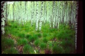

I. Gohberg, M.S. Livsic, I. Piatetski-Shapiro. David Milman (1912-1982)
David Milman - list of publications
Facsimile of David Milman's Ph.D. thesis "Method of extreme points and centre instances"
Vladimir Milman. I Wish You Love, a feature film by Svetlana Koseniv
Vitali Milman. Notes From My life (the pdf-file)
Vitali Milman. Short Stories (in pdf format)
Vitali Milman. Passion for Art (in pdf format)
Vitali Milman. Consciousness of the Animals. Life and Consciousness. Observations on Traditions (in pdf format)
Vyacheslav Yanovsky. curriculum vitae
Darya Medvedeva. Travelling around the Russian South
Darya Medvedeva. Travelling around Ukraine
Darya Medvedeva. Travelling to Solovki
Darya Medvedeva. The museum of N.K. Roerich
PHOTOS AND PICTURES
on temnyjles.ru
Photos of Kislovodsk and surroundings
Photo album "The appearance of Kislovodsk in the past"
Evgeny Briginevich. Photos of Kislovodsk
Asha Chokerbali. Photos of Kislovodsk Park
Ilja Miklaszewski. Photos of Kislovodsk Park
Alexey Travkin. Photos of the surroundings of the sanatorium "Elbrus"
Lubov Traiduk. Kislovodsk and surroundings (photo album)
Illustrations for the article by L. Traiduk "Kislovodsk Pearl"
Illustrations for the article by L. Traiduk "The architects Bernardazzi"
Illustrations for the article by L. Traiduk "A diamond in the architectural crown of Kislovodsk"
Illustrations for the guidebook by Vyacheslav Yanovsky "The North Caucasus from Adygea to Dagestan"
Gunib (Dagestan)
Photos of Moscow region
Literary Moscow region (by M. Gar)
Museums near Moscow (by M. Gar)
Swamps near Moscow (by M. Gar)
Zvenigorod (by M. Gar)
Kozino village (Odintsovsky District) (by M. Gar)
Islavskoye village (Odintsovsky District) (by M. Gar)
Uspenskoye village and Nikolina Gora holiday village (Odintsovsky District) (by M. Gar)
Ubory village (Odintsovsky District) (by M. Gar)
Mozzhinka mountains near Zvenigorod
Tushino (North-Western district of Moscow) (by M. Gar)
Aleshkinsky forest (North-Western district of Moscow) (by M. Bakulina)
The vicinity of the Yauza river (Moscow) (by I. Yudina)
Photos of Hatun village
Stupinsky District, Moscow Region
Khatun and surroundings photos
Photos of Stupinsky District (by M. Gar)
Illustrations for the book by V.N. Kalenov "History of the Khatun Volost"
Drawings
Photos and drawings by Olga Taller
Watercolors by Olga Taller (p. 1)
Watercolors by Olga Taller (p. 2)
Watercolors by Olga Taller (p. 3)
Kislovodsk in drawings by Alexei Travkin
Illustrations for the story "The Coast" by Stanislav Podolsky
SONGS AND ROMANCES on temnyjles.ru
in mp3 format
Songs of Victoria Dobrozhanskaya to poems by the Silver Age poets
The program "Russian Romance" (sings Andrei Lavreshnikov)
The program "When the lights come on" (sings Andrei Lavreshnikov)
The program "My happiness" (sings Andrei Lavreshnikov)
SOME TOP RUSSIAN PAGES OF THE SITE
Pages of the authors of the "Temnyj les"
Literary Kislovodsk and surroundings
On the "Temnyj les" website
(Subject Directory)
History, geography, local lore
Natural science and philosophy

{kind=link}